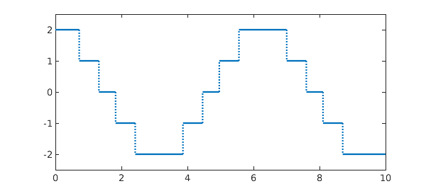
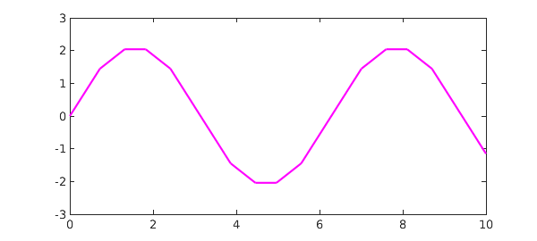
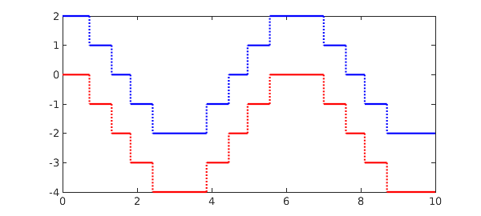

Suppose we have a function, like this one:
x = chebfun('x',[0 10]);
f = round(2*cos(x));
LW = 'linewidth'; lw = 1.6;
plot(f,LW,lw), ylim(2.5*[-1 1])

The Chebfun command sum returns the definite integral over the prescribed interval, which is just a number:
format long, sum(f)
ans = -1.150444078461246
You can also calculate the definite interval over a subinterval by giving two additional arguments, like this:
sum(f,3,4)
ans = -1.864326901403210
To compute an indefinite integral, use the Chebfun command cumsum. This returns a chebfun defined over the given interval:
g = cumsum(f); plot(g,'m',LW,lw)

Thus another way to compute the integral over a subinterval would be to take the difference of two values of the cumsum:
g(4) - g(3)
ans = -1.864326901403210
As always in calculus, when working with indefinite integrals you must be careful to remember the arbitrary constant that may be added. Thus for example, if you integrate $f$ and then differentiate it, you get $f$ back again:
norm( diff(cumsum(f)) - f )
ans =
0
If you differentiate $f$ and then integrate it, on the other hand, you get something different:
norm( cumsum(diff(f)) - f )
ans = 6.324555320336759
Plotting the two instantly alerts us that we forgot to add back in the value at the left endpoint, namely $f(0) = 2$:
plot(f,'b',cumsum(diff(f)),'r',LW,lw)

Sure enough, adding this number makes the two functions agree:
norm( f(0)+cumsum(diff(f)) - f)
ans =
0